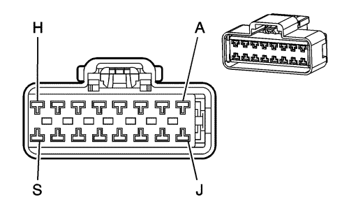

Captiva |
||||||||
|
|
|
|||||||
|
 |
Información de parte de conector
| Información de parte de terminal
|
Bulón | Tamaño | Color | Circuito | Función | Opción |
|---|---|---|---|---|---|
A | 1.25 | D-BU | 6189 | Señal de desbloqueo interior del maletero/luna trasera | -- |
B | 1.25 | PU | 169 | Señal de bajada trasera izquierda del interruptor maestro del elevalunas eléctrico | -- |
C | 1.25 | D-GN | 168 | Señal de subida trasera izquierda del interruptor maestro del elevalunas eléctrico | -- |
D | 1.25 | PU | 171 | Señal de bajada trasera derecha del interruptor maestro del elevalunas eléctrico | -- |
E | -- | -- | -- | No se utiliza | -- |
F | 1.25 | L-GN | 170 | Señal de subida trasera derecha del interruptor maestro del elevalunas eléctrico | -- |
G | 1.25 | D-BU | 1307 | Tensión accesoria | -- |
H | 1.25 | D-BU | 1307 | Señal de bloqueo del interruptor maestro del elevalunas eléctrico | -- |
J | 1.25 | TN | 1300 | Señal de subida delantera izquierda del interruptor maestro del elevalunas eléctrico | -- |
K | 1.25 | GY | 1136 | Señal de bajada delantera izquierda del interruptor maestro del elevalunas eléctrico | -- |
L | 1.25 | BK | 550 | Toma de tierra | -- |
M | -- | -- | -- | No se utiliza | -- |
N | 1.25 | D-BU | 666 | Control de subida delantera derecha del motor del elevalunas eléctrico | -- |
P | 1.25 | D-GN | 6681 | Señal rápida de la ventanilla eléctrica del conductor desde el interruptor | -- |
R | 1.25 | YE | 643 | Tensión accesoria | -- |
S | 1.25 | BN | 667 | Tensión accesoria | -- |
| © Copyright Chevrolet Europe. All rights reserved |